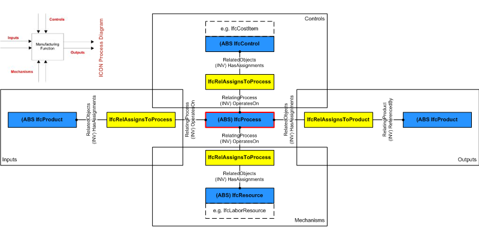

5.1.3.9 IfcProcess
| Processus |
| Prozess (allgemein) |
IfcProcess is defined as
one individual activity or event, that is ordered in time, that
has sequence relationships with other processes, which transforms
input in output, and may connect to other other processes through
input output relationships. An IfcProcess can be an
activity (or task), or an event. It takes usually place in
building construction with the intent of designing, costing,
acquiring, constructing, or maintaining products or other and
similar tasks or procedures. Figure 93 illustrates process relationships.
NOTE Definition according to ISO9000:
A process is a set of activities that are interrelated or that interact with one another. Processes use resources to transform inputs
into outputs. Processes are interconnected because the output from one process becomes the input for another process. In effect,
processes are "glued" together by means of such input output relationships.
 |
|
Figure 93 — Process relationships and the ICON process diagram.
|
HISTORY New entity in IFC1.0.
IFC2x CHANGE The attribute Productivity has been removed.
IFC4 CHANGE The attribute Identification has been promoted from subtypes IfcTask and others.
Relationship use definition
Process information relates to other objects by establishing the following relationships:
- Nesting of processes : IfcRelNests - A process can contain sub processes and thereby be nested.
- Sequencing of processes : IfcRelSequence - Processes can be placed in sequence (including overlapping for parallel tasks), and have predecessors and successors.
- Assigning process to schedules : IfcRelAssignsToControl - Activities such as tasks, and predominately summary tasks, are assigned to a work schedule.
- Having a product assigned to the process as input :
IfcRelAssignsToProcess - Products can be assigned as input to a process, such as for construction process planning.
- Having a product assigned to the process as output :
IfcRelAssignsToProduct - Products can be assigned as output to a process, such as for construction process planning.
- Having a control assigned to the process as process control : IfcRelAssignsToProcess - Items that act as a
control onto the process can be assigned to a process, such as for cost management (a cost item assigned to a work task).
- Having a resource assigned to the process as consumed by the process : IfcRelAssignsToProcess - Items that act
as a mechanism to a process, such as labor, material and equipment in cost calculations.
Common Use Definitions
The following concepts are inherited at supertypes:
 Instance diagram
Instance diagram
Property Sets for Objects
The Property Sets for Objects concept applies to this entity as shown in Table 3.
|
|
Table 3 — IfcProcess Property Sets for Objects |
XSD Specification:
<xs:element name="IfcProcess" type="ifc:IfcProcess" abstract="true" substitutionGroup="ifc:IfcObject" nillable="true"/>
<xs:complexType name="IfcProcess" abstract="true">
<xs:complexContent>
<xs:extension base="ifc:IfcObject">
<xs:attribute name="Identification" type="ifc:IfcIdentifier" use="optional"/>
<xs:attribute name="LongDescription" type="ifc:IfcText" use="optional"/>
</xs:extension>
</xs:complexContent>
</xs:complexType>
EXPRESS Specification:
EXPRESS-G diagram
Attribute Definitions:
| Identification | : |
An identifying designation given to a process or activity.
It is the identifier at the occurrence level.
IFC4 CHANGE Attribute promoted from subtypes.
|
| LongDescription | : |
An extended description or narrative that may be provided.
IFC4 CHANGE New attribute.
|
| IsPredecessorTo | : |
Dependency between two activities, it refers to the subsequent activity for which this activity is the predecessor. The link between two activities can include a link type and a lag time.
|
| IsSuccessorFrom | : |
Dependency between two activities, it refers to the previous activity for which this activity is the successor. The link between two activities can include a link type and a lag time.
|
| OperatesOn | : |
Set of relationships to other objects, e.g. products, processes, controls, resources or actors, that are operated on by the process.
|
Inheritance Graph:
 Link to this page
Link to this page